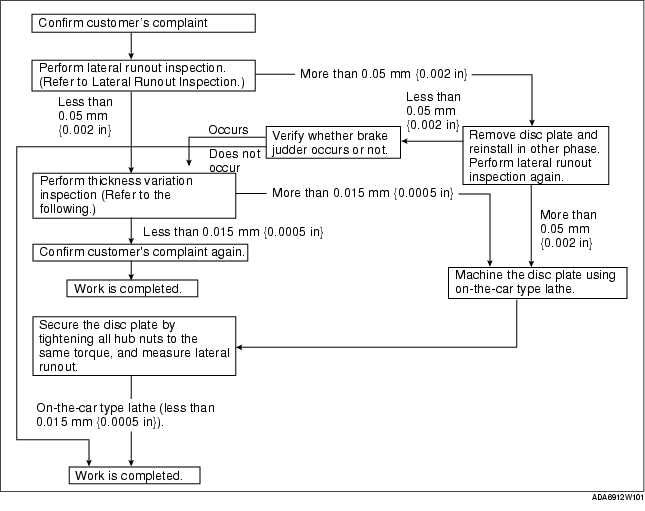
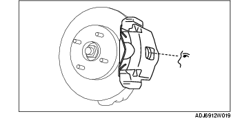

Front brake (disc) inspection
Brake Judder Repair Hints
Description
1. Brake judder concern has the following 3 characteristics:
Steering wheel vibration
1. Steering wheel vibrates in the rotation direction. This characteristic is most noticeable when applying brakes at a vehicle speed of 100-140 km/h {62.1-86.8 mph}.
Floor vibration
1. When applying the brakes, the vehicle body shakes back and forth. The seriousness of the shaking is not influenced by vehicle speed.
Brake pedal vibration
1. When applying brakes, a pulsating force tries to push the brake pad back. The pulsation is transmitted to the brake pedal.
Causes
1. The following are the main possible causes of brake judder:
Due to an excessive runout (side-to-side wobble) of the disc plate, the thickness of the disc plate is uneven.
1. If the runout is more than 0.05 mm {0.002 in} at the position 10 mm {0.39 in} from the disc plate edge, uneven wear occurs on the disc plate because the pad contacts the plate unevenly.
2. If the runout is less than 0.05 mm {0.002 in}, uneven wear does not occur.
The disc plate is deformed by heat.
1. Repeated panic braking may raise the temperature in some portions of disc plate by approximately 1,000 °C {1,832 °F}. This results in a deformed disc plate.
Due to corrosion, the thickness and friction coefficient of disc plate change.
1. If a vehicle is parked in damp conditions for a long time, corrosion occurs on the friction surface of disc plate.
2. The thickness of corrosion is uneven and sometimes appears like a wave pattern, which changes the friction coefficient and causes a reaction force.
Inspection and repair procedure

Lateral runout inspection
1. To secure the disc plate and the hub, tighten the hub nuts upside down or insert a washer (thickness 10 mm {0.39 in}, inner diameter more than 12 mm {0.47 in}) between the hub bolt and the hub nut.
2. After tightening all the hub nuts to the same torque, put the dial gauge on the friction surface of disc plate 10 mm {0.39 in} from the disc plate edge.
3. Rotate the disc plate one time and measure the runout.
Front disc plate runout limitThickness variation inspection
1. Clean the disc plate-to-pad friction surface using a brake cleaner.
2. Measure the points indicated in the illustration using a caliper (micrometer).

3. Subtract the minimum value from the maximum, and if the result is not within specification, machine the disc plate using a lathe.
Thickness variation limitDisc Plate Thickness Inspection
- • Excessive runout may result if the disc plate is removed from the vehicle then machined. Machine the disc plate while installed on the vehicle.
1. Measure the thickness of the disc plate.
Minimum front disc plate thickness Minimum front disc plate thickness after machining using a brake lathe on-vehicleDisc Pad Thickness Inspection
1. Jack up the front of the vehicle and support it with safety stands.
2. Remove the wheel and tires.
3. Verify the remaining thickness of the pads.
Minimum front disc pad thickness

4. Replace the pads as a set: right and left wheels, if either one is at or less than the minimum thickness.